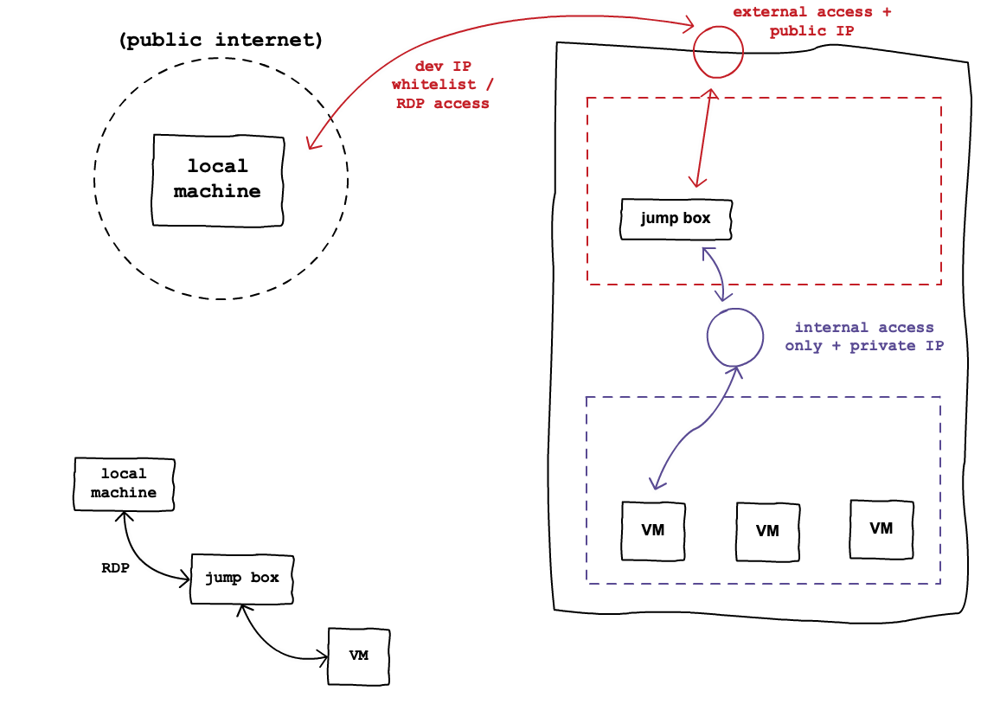

Remote management is the practice of accessing and managing a (remote) machine from another (local) machine. For consumers, remote management (RM) is often used by help desk professionals to troubleshoot issues by controlling the client’s PC instead of relaying instructions over the phone. In our context, we use RM to manage our servers which, being virtual, can never be accessed physically.
So far, you have experienced a simplistic form of RM using the Azure web portal’s RunCommand console. Although the RunCommand console was convenient for us to interact with our Ubuntu VM, it is not commonly, if ever, used by professionals due to its inherent limitations. As you likely noticed, the RunCommand console is browser-based, slow, and only able to send commands and print their outputs one at a time. In order to effectively configure and troubleshoot our VMs we need more robust RM tooling.
Recall that both the Azure CLI and the web portal GUI are backed by the same REST API. We have also learned that working from the command-line offers greater portability and automation capability relative to using a browser-based GUI. With the az CLI we are able to use the same RunCommand we experienced in the browser but with all of the benefits of the command-line.
Tip
Unlike the browser console, you can use the az CLI to issue RunCommands to multiple machines at once using their resource IDs (VM identities)!
Within the Azure CLI the vm sub-group run-command can be used to toggle commonly used machine settings or execute complete scripts remotely. Every RunCommand has a unique name known as its command-id which you can view using list:
> az vm run-command list
# concise table output using a JMESPath query
> az vm run-command list --query "[].{ commandId: id, label: label }" -o table
To issue a RunCommand use the invoke Command:
> az vm run-command invoke --command-id <command ID>
There are several RunCommand commands that perform pre-defined actions on the remote machine. However, you will often want to run custom scripts or individual shell commands directly. To execute scripts remotely, you can use the RunPowerShellScript and RunShellScript command IDs for Windows and Linux VMs respectively.
Using these RunCommand commands is the command-line equivalent of pasting the script into the RunCommand console in the browser. You can run any number of scripts using the --scripts argument. These can be individual shell commands enclosed in quotes or file path references to pre-written scripts on your local machine.
Tip
For Windows VMs, you should use RunPowerShellScript and for Linux VMs use RunShellScript. Note that this is in reference to the remote VM you are interacting with, not the OS of your local machine that is issuing the RunCommand.
Here is an example of issuing single shell commands that simply list files in the home directory of the VM. For Windows, we use the PowerShell Get-ChildItem command, and for Linux, its Bash equivalent, ls.
# for a Windows VM run a PowerShell script (uses PowerShell in the VM)
> az vm run-command invoke --command-id RunPowerShellScript --scripts "Get-ChildItem"
# for a Linux VM run a Shell script (uses the default shell of the VM, usually Bash)
> az vm run-command invoke --command-id RunShellScript --scripts "ls"
For longer scripts, you will want to reference pre-written script files on your local machine. You can do this using the @/path/to/script syntax.
Here is an example that uses a script file located in the home (~) directory called myscript.<ext> with the appropriate extension for PowerShell or Bash corresponding to the CLI shell of the remote VM.
# myscript.ps is a PowerShell script
> az vm run-command invoke --command-id RunPowerShellScript --scripts @"~/myscript.ps"
# myscript.sh is a Bash script
> az vm run-command invoke --command-id RunShellScript --scripts @"~/myscript.sh"
After invoking the script, it will output information about the result. By default the message property of the output object will show the stdout and stderr with newline characters (\n) between them.
One thing to keep in mind is that RunCommand is just as slow from the command-line as it is in the browser console. It can still be useful for executing on multiple machines at once, but it is more common to use the other remote management mechanisms discussed below.
The Remote Desktop Protocol (RDP) is a protocol developed by Microsoft for accessing the GUI desktop of a remote Windows machine. The remote machine can be physical or virtual, but in our case we will always use RDP with Windows Server VMs. Instead of interacting with the machine using the command line, you can use the VM as if it were right in front of you!
RDP is often used by technical support staff to help enterprise and consumer customers debug issues on their machines. But RDP is great for DevOps engineers to troubleshoot and configure things manually where a full desktop experience is preferred.
Fun Fact
RDP is used as both a noun, referring to the protocol itself, and as a verb, referring to the act of “RDP-ing into a machine”!
Windows provides the mstsc command-line utility for creating an RDP session between your local and remote machine. Opening an RDP session is very simple and only requires the public IP address of the VM and the login credentials.
Here is the general form of using mstsc:
> mstsc /v:<public IP address>
This will prompt you for a username and password to access the VM. Once those are entered, a new window will appear that provides the full desktop GUI of the remote machine. We will get to practice using RDP in the upcoming exercises.
Note
Desktop access over RDP inherently requires the VM to have the desktop GUI shell installed. If the VM is using the Windows Server Core OS then only a PowerShell terminal is presented during an RDP session.
One common use case for RDP is to securely access machines that exist within a protected corporate network. In order to protect production machines, their network and firewall configurations are locked down to only accept connections using the private IP addresses of machines that are connected to their protected network.
In addition to the production servers, a small number of VMs, called jump boxes or jump servers, are given public IP addresses and RDP access. Jump boxes bridge the gap between the public Internet (where your local machine lives) and the private network (where production servers live). These operational machines allow you to connect from your local machine to the jump box and then jump to access the protected machines within the private network. You can think of the jump box like a middle man between the developer’s local machine and the protected machines.
For security reasons, jump boxes are configured to expose RDP access only to developers of the company by using an IP address whitelist, VPN tunneling, or other more complex patterns. Once you have RDP’d into the jump box, it behaves as if you are using a desktop from within the private network. From there, you can access protected machines using RDP or one of the other remote access mechanisms.
This strategy minimizes the exposed network area of the infrastructure much like the slimmed Windows Server OS minimizes the exposed software area for potential attacks. Instead of having to worry about all of the machines having public IP addresses and RDP access, only a few jump boxes are exposed. Often, these boxes are started and stopped on demand to further restrict their usage. From these minimal entry points to the system, the access between the local machine, jump boxes, and production machines can be carefully restricted, monitored, and logged.
Sometimes it is beneficial to manage servers headlessly. As we learned in our previous lessons, the power of direct OS access and scripted automation makes command-line management an attractive option. Although the az CLI offers command-line access with RunCommand, it is slow and not suitable for automated scripting or troubleshooting. RDP is natural to use with its full desktop interface, but there are times where entering individual VMs and navigating the GUI in this way is inefficient.
Instead, there is a set of Windows-exclusive tools that allow you to work with a machine efficiently through the PowerShell terminal. Remote PowerShell Sessions (PS-Sessions) are a command-line hybrid of both RDP and the az CLI RunCommand. But instead of working in a desktop GUI, or using the Azure REST API as a slow middle-man, it transfers commands and outputs to and from a local and remote machine’s CLI shells in near real-time.
A session can be used to invoke individual commands using the cmdlet Invoke-Command or to enter an interactive session using Enter-PSSession. The first cmdlet, Invoke-Command, is very similar to RunCommand but is both faster and more configurable. While Enter-PSSession is the command-line equivalent of RDP. Both of these tools are built on top of Windows Remote Management (WinRM).
Windows Remote Management (WinRM) is the Microsoft implementation of WS-Management Protocol, a standard SOAP-based protocol that allows for headless remote management.
Note
Unfortunately, in this class we will not be using PS-Session cmdlets due to their OS requirements. WinRM based tooling is not available on Windows 10 Home Edition. It requires Windows Server or a PC running Windows 10 Enterprise, Professional, or Education editions.
However, they are important tools for gaining access to remote Windows machines and you will use them in your career moving forward. For this reason, it is important to at least gain a conceptual understanding of how they work.
Remote PowerShell Sessions (RPS) are connections formed between a host and client machine. The client machine is the one initiating the session, like your local machine, while the host would be a remote VM you are trying to access. Just as RDP gives you desktop GUI shell access, the PS-Session gives you PowerShell CLI shell access. We will go over the essentials in this article, but for more information take a look at this deep-dive article.
After enabling RPS access on the remote (host) machine you can open a session using New-PSSession.
Warning
In order to use New-PSSession and the other PSSession related cmdlets you must be using Windows 10 Pro, Enterprise, or Education editions as they all come pre-installed with the Hyper-V Module dependency. This module is not available for download and cannot be installed on Windows 10 Home, as the tool was not created for consumer PCs.
Here is the most basic example that requires a VM’s global identifier. The output of running this cmdlet will be a Session ID which we store in a variable for use with the related cmdlets:
> $SessionId=New-PSSession -VMId 484155ab-b52b-4d554-akk7f1540e80
If you were to run this command, you would be asked for credentials (username, and password for the VM) and then granted access by creating a PowerShell session with the remote machine. There are numerous ways of forming the initial session which you can read more about in this documentation article.
Once a session has been created you can begin an interactive mode to gain access to a PowerShell REPL with the other machine. Within this session, commands you enter are transmitted to the remote machine and outputs are transmitted back locally. Effectively, it is as if you are working in the PowerShell terminal of the remote host machine.
You can enter a PS Session using the Enter-PSSession command and supplying it the Session ID output from New-PSSession:
> Enter-PSSession -Session "$SessionId"
Just as with New-PSSession there are numerous options that you can read more about in this documentation article. In order to exit the interactive session you can use the aptly named Exit-PSSession:
> Exit-PSSession
Entering an interactive session with Enter-PSSession allows you to attach to the remote machine and run as many commands as you need. However, because you are working within the remote host machine you will only be able to use files and scripts that already exist on its disk. If you need to run scripts or one-off commands on the remote machine, then the Invoke-Command cmdlet is the right tool for the job.
Invoke-Command gives you the ability to pass in one PowerShell command, or local PowerShell script, you want to execute on the remote Windows machine:
> Invoke-Command -ComputerName 52.55.134.28 -credential student -filepath c:\user\scripts\some-script.ps
The preceding command would run the PowerShell script found at c:\user\scripts\some-script.ps on the remote machine at the IP address 52.55.134.28 and using the username student. The password for the student role would need to be entered before the script is sent to be run on the remote machine.
Now that we have learned about the many remote management mechanisms available to Windows machines we are ready to put them to use. Head over to the Windows Server & IIS deployment walkthrough where we will use RDP to configure and host a simple .NET API!